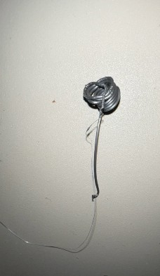

Material Thinking
Experiment 2
1. What did I aim to do?
Use 3D printing to formulate same appearance of original material
2. Which question did I ask of my material?
Tension, thickness.
3. Which steps did I take and/or methods did I use?
Comparation: PLA material “wire”
